Quiz作成
ここでは4択クイズを作成するまでの設計(?)をしていこうと思います。
ページレイアウト

ページ掲載内容
-
ヘッダー部 header
サイト名を表示 h1
戻るボタン button
次へボタン button -
メイン部 main
タイトルを表示 h2
問題文を記載 p
ラジオボタン4つ表示 button flex1
解答ボタン button flex1
正解/不正解を表示 p flex2
解説を表示 p flex2 -
フッター部 footer
copyrightなどを記載 small
ロジック(古い方)
-
[問題文] - [ラジオボタン] - [解説文]
正解として上記の3つを紐づける -
紐づいた問題文とラジオボタンの組み合わせで正解不正解を判定する
[ラジオボタンを選択]→[解答を見るを選択]→[正解不正解と解説が表示される]→[次へを選択]→[再描写] -
正解の対以外のラジオボタンの選択肢はランダムとする
ランダムの関数は指定なし
ラジオボタンのテキストはランダムに上下も置き換えること -
問題表示まで
1正解を用意する ※50
2不正解の選択肢を3つ用意する
3ラジオボタンの上下をランダムに決める -
解答ボタンから
1正解か不正解の判定を行う ※51
2解答と解説の表示を行う -
再描写
1リロードではなく[問題表示まで]を再度実施する ※52
ロジック(新しい方)
-
データ構造
index(一意の数字) 問題(写真) 正解 解説文 sha-256 **.png 消火水槽 これは**である ~~ ~~ ~~ ~~ ※一意の数字は写真と問題などを適当に組み合わせたハッシュ値とする。
-
問題文
[問題(写真)]を表示する -
ラジオボタン
[問題(写真)]に対応する[正解]を表示する
他3つは不正解のデータを表示する
上下など表示位置はランダムとする -
解答ボタン(レイアウト未追加)
ラジオボタンの選択した内容と[問題(写真)]からハッシュを作成する
[index(一意の数字)]の値と作成したハッシュが一致すれば正解、違えば不正解を表示する。
[問題(写真)]に対応する[解説文]を表示する
※解答がバレるのではないか？
関数が秘匿できればOKかと思われる -
次へボタン(レイアウト未追加)
次の問題を表示する -
Result(次期実装)
5問で1回としてリザルト画面を実装する
Top → Problem → ** → Problem → Result → Top(繰り返し)